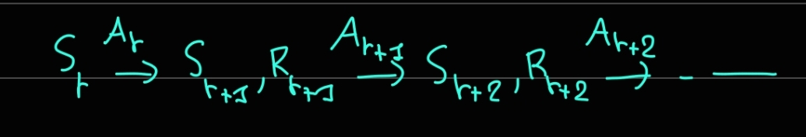

5 Reinforcement learning - Basic
In this section, we outline the main ideas behind reinforcement learning and how they can be applied in the context of this thesis.
5.1 A non mathematical, but delicious example.
Suppose we want to cook a delicious meal. At any point in time, we are making decisions such as
- which ingredients we use. Do we use tofu or seitan? Do we add spice more chili pepper? When do we incorporate the sauce?
- which cookware we use? Cast iron, or non-stick pan?
- whether to stir or not. It may stick and burn at the bottom of the pan if we don’t, but we are lazy and our laziness has to be weighted in.
- Or simply do nothing!
All of these decisions, which we will call actions from now on, are taken in reaction to the current state of the cooking process, following a certain policy, which is shaped by our previous cooking experience.
After each action, the cooking process get to a new state and we get a reward that depend on how we did. Maybe the food started to burn in which case we get a negative reward, or maybe we made the food better, in which case we get a positive reward. In this example, there is also a terminal state, in which we finished cooking and get to eat the meal.
But how do we learn how to cook, that is, how do we learn the policy? We learn it by trying to make the food as good as possible, which is defined by the reward we get after each action. Some of those rewards are immediate. For example, if we add some spices to our food and it tastes better, we may be inclined to do it again the next time we cook a meal. We want to have a policy that maximize the total rewards we get, which also mean that we have to balance our decision between the immediate reward and the future rewards. Adding a spice may make the meal taste better in the short term, but it may clash later when we add other ingredients, leading to a worse meal and bad rewards.
Each time we cook, we learn what works and what doesn’t, and remember that for the future time we cook. But, if we want to get better at cooking, we must not just repeat the actions that worked! We also have to take some risks, and explore the potential actions we can take at each state! On the other hand, we still need to rely and exploit what we know, so there is a balance between exploitation and exploration to find so we can learn as fast as possible.
5.2 Finite Markov decision process
Before introducing reinforcement learning, we first need to define a Markov decision process (MDP).
Definition 5.1 (Markov decision process). A finite Markov decision process is defined as a discrete time process, where we have
- a state set \(\mathbfcal{S}\),
- an action set \(\mathcal{A}\), containing all possible actions,
- for each state and each action, we have a reward set \(\mathcal{R}(s,a)\), which contain the potential rewards received after taking action \(a\in\mathcal{A}\) from the state \(s\in\mathcal{S}\).
A Markov decision process has a model, which consist of
- the probability of getting from state \(s\) to the state \(s'\) by taking action \(a\), which we call the state transition probability \(p(s'|s,a) = P(S_{t+1} = s' | s_t = s, a_t = a)\).
- the probability of getting reward \(r\) by taking the action \(a\) at a state \(s\) \(p(r|s,a) = P(R_{t+1} = r | S_t = s, A_t = a)\).
Furthermore, a policy function is also given that governs for a given state \(s\in\mathcal{S}\), the probability of taking action \(a\in\mathcal{A}\), that probability is \(\pi(a|s) = Pr(A_{t+1} = a|S_t = s)\).
Remark. We have implicitly defined the random variables designing the state, action, reward at a time \(t\), those are respectively \(S_t,A_t,R_t\). A diagram of the process is as follow
(Here is a shiny diagram, I should learn tikz..)
Remark. The state space \(\mathcal{S}\) and the action space \(\mathcal{A}\) can be finite or not. We only consider the case of finite Markov decision process to make matter easier, with generalization only if necessary. This also mean that the model is finite.
The model in a MDP can be in practice impossible to define in advance. This is remedied by using so called model free reinforcement learning algorithms.
Remark. Markov property applies, in particular lack of memory. (TODO)
Example 5.1 (A more mathematical example, adorable)
(More or less a gridworld example to write about)
At this point, we may be able to roughly define how to translate the problem (TODO, should formulate it better so I can reference it).
- The state space is defined by the problem parameters \((b,n)\). A simplification that could be possible would be to discretize the state space.
- Actions would be choosing the solver parameters \((\Delta t, \alpha)\). This can also be discretized.
- Reward can be defined to be proportional to convergence rate after a certain number of iterations, where better convergence rate leads to better rewards.
- The model can be partially described, in the sense that while we can’t model rewards, we can define the state transition probabilities by simply choosing a new state at random.
5.2.1 Bellman equation
We first define a trajectory. We note as \(S_t\) the state of an agent at instant \(t\). Then, according to the policy, this agent takes the action \(A_t\). After taking this action, the agent is now at the state \(S_{t+1}\), and it gets the rewards \(R_{t+1}\). Then the agent takes action \(A_{t+1}\), and gets to a new state \(S_{t+2}\) with reward \(R_{t+2}\). This can continues indefinitely. We define the trajectory of an agent with starting state \(S_t = s\) as the states-rewards pairs \({(S_{t+1},A_{t+1}),(S_{t+2},A_{t+2} ),\dots}\).
Ideally, we would like to chose a policy that aim to maximize rewards along any trajectory, given any starting state. This is the goal of any reinforcement learning algorithm. We now define the discounted return along a trajectory.
Definition 5.2 Let \(t = 0, 1, \dots\). The discounted return along the trajectory \({(S_{t+1},A_{t+1}),(S_{t+2},A_{t+2} ),\dots}\) is the random variable given by
\[ G_t = R_{t+1} + \gamma R_{t+2} + \gamma^2 R_{t+3} + \dots \]
where \(\gamma \in (0,1)\) is called the discount rate.
The discounted return is thus the sum of rewards along a trajectory. The discount rate is chosen depending on whether we want the agent to favor short term rewards, in which case a discount rate closer to \(0\) can be chosen, or long term rewards, with a discount rate closer to \(1\).
Since the discount rate is a random variable, we can look at its expectation, in particular, we are interested in its conditional expectation, given a starting state \(S_t = s\). This expectation is called the state value.
Definition 5.3 (State value) The state value of a state \(s\) is the function, defined for any \(s\in\mathcal{S}\) as
\[ v_\pi(s) = E[G_t|S_t = s] = E[R_{t+1} + \gamma R_{t+2} + \gamma^2 R_{t+3} + \dots | S_t] \]
where \(\pi\) is a given policy.
Remark. The Markov property of the MDP means that the state value does not depend on time.
The objective is thus to find a policy \(\pi\) that maximizes the state values. We next derive the Bellman equation.
It is first apparent that
\[\begin{align} G_t &= R_{t+1} + \gamma R_{t+2} + \gamma^2 R_{t+3} + \dots \nonumber\\ &=R_{t+1} + \gamma \left(R_{t+2} + \gamma R_{t+3}+ \dots \right) \nonumber\\ &=R_{t+1} + \gamma G_{t+1} \end{align}\]
Inputting this into the state value yields
\[ v_\pi(s) = E[G_t|S_t = s]= E[R_{t+1}| S_t = s] + \gamma E[G_{t+1} | S_t = s] \]
The first term is the expectation of immediate reward, following a certain policy \(\pi\), the second is the expectation of future rewards. Let us expand on that formula a bit more. We use the law of total expectation on the first part of the RHS to get
\[ E[R_{t+1}| S_t = s] = E[E[R_{t+1}|S,A]] = \sum_{a\in\mathcal{A}}\pi(a,s)\sum_{r\in\mathcal{R}}rp(r|s,a) \]
where \(\mathcal{R} = \mathcal{R}(s,a)\) is the set of possible rewards one can get by taking action \(a\) at state \(s\).
We now develop the second part of the RHS of the equation to get,
\[ E[G_{t+1} | S_t = s] = E[E[G_{t+1} | S_t = s , S_{t+1}]] = \sum_{s'\in\mathcal{S}}E[G_{t+1}|S_t = s, S_{t+1} = s']p(s'|s) \]
where \(p(s'|s) = \sum_{a\in\mathcal{A}} p(s'|s,a)\pi(a,s)\) is the probability of the next state being \(s'\) if the current state is \(s\). Because of the Markov property of the MDP, we can remove the conditioning \(S_t = s\) and thus, \(E[G_{t+1}|S_t = s, S_{t+1} = s'] = E[G_{t+1}|S_{t+1} = s] = v_\pi(s')\). Then \[ E[G_{t+1} | S_t = s] = \sum_{s'\in\mathcal{S}}\sum_{a\in\mathcal{A}}v_\pi(s')\pi(a|s)p(s'|s,a). \]
Putting everything together, we get a first form of Bellman equation for (finite) MDP.
\[ v_\pi(s) = \sum_{a\in\mathcal{A}}\pi(a,s)\left[\sum_{r\in\mathcal{R}}rp(r|s,a) + \gamma\sum_{s'\in\mathcal{S}}v_\pi(s')p(s'|s,a) \right] \]
Some remarks
- The Bellman equation gives a recursive relation for the state values. Solving this equation is called policy evaluation and involves fixed point iterations, which we will not get into details here.
- This equation is valid for a given policy.
The expression between the brackets is called the action value \(q_\pi(s,a)\). Bellman’s equation is then simply
\[ v_\pi(s) = \sum_{a\in\mathcal{A}}\pi(a,s)q_\pi(s,a) = E_\pi[q] \]
(///TODO)
5.3 Bellman optimality equation
Given some state value, one may ask the fundamental question.
(test Zhao (2023) , Sutton and Barto (2018) , Williams (1992), Lillicrap et al. (2019)).